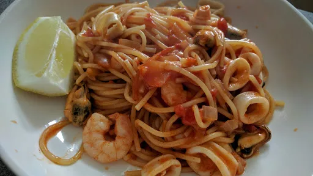

Seafood pasta

Servings: 4
Total: 20 mins
Ingredients
- 1 tbsp olive oil
- 1 onion, chopped
- 1 clove garlic, chopped
- 1 tsp paprika
- 400 g can chopped tomatoes
- 1 l chicken stock
- 300 g spaghetti, roughly broken
- 240 g pack mixed frozen seafood, defrosted
- freshly chopped parsley
- 4 lemon wedges
Instructions
- Heat the
oil1 tbsp
in a wok or large frying pan, then cook the onion1
and garlic1 clove
over a medium heat for 5 minutes until soft.
- Add the
paprika1 tsp
, tomatoes400 g can
and stock1 l
, then bring to the boil.
- Turn down the heat to a simmer, stir in the
pasta300 g
and cook for 7 minutes, stirring occassionally to stop the pasta300 g
from sticking.
- Stir in the
seafood240 g
, cook for 3 minutes more until it's all heated through and the pasta300 g
is cooked. Season to taste.
- Garnish with the parsley and serve with the
lemon wedges4
.
-
kcal
370
-
fat
5 g
-
saturates
1 g
-
carbs
62 g
-
sugar
0 g
-
fibre
4 g
-
protein
23 g
-
salt
1.4 g
BBC Good Food: One-pot Dishes
Short Link
Long Link